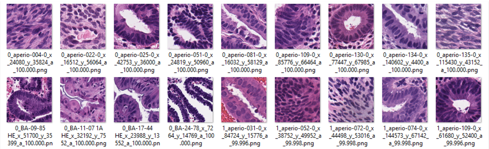
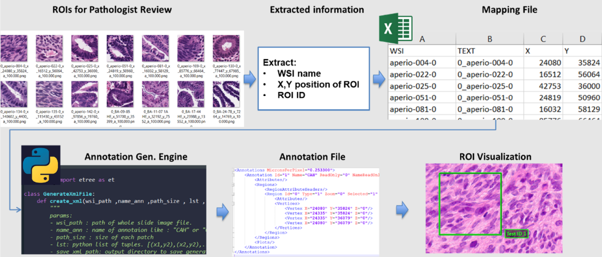
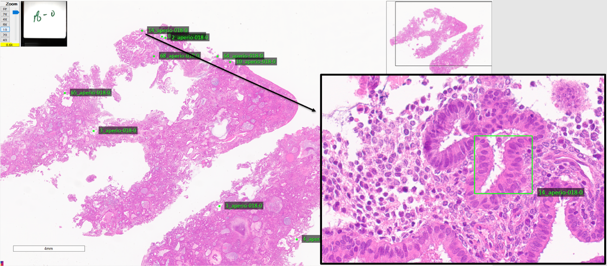

Annotation File Generator
assessment.annotation module
Title: ValidPath Toolbox - Annotation File Generation Module
Description: This is the Annotation File Generator module for the ValidPath toolbox. It is includes Annotation_Generator class and several methods
Classes: Annotation_Generator
Methods: There are three methods in the Annotation File Generation module as follows:
ROI_Generator.generate_map_file(input_DIR: str, output_DIR: str, file_Name: str)
ROI_Generator.create_xml(input_DIR,file_Name,path_size,ROI_output_DIR,tag_name)
make_region(self, x , y , id , txt,path_size,Regions)
- class assessment.annotation.Annotation_Generator[source]
Bases:
object- create_xml(input_DIR, file_path, path_size, save_xml_path)[source]
This method reads the map file generated uisng the ROI_Generator.generate_map_file and generated the XML annotation file based on Aperio ImageScope standard.
- Parameters
- input_DIRstring
the path to the input directory of mapping file
- file_pathstring
map file name (csv)
- path_sizeinteger
Size of image patch
- save_xml_path: string
output directory
- Returns
XML – the XML files
- generate_map_file(input_DIR, output_DIR, file_Name, tag_name)[source]
This method extracts different types for annotations from Whole Slide Images. It can save the extracted annottions to the output directory as defined in inputs. This code also handles several annotations per slide. The output directory will be generated based on the structure of the input directories.
- Parameters
- input_DIRstring
the path to the input directory of image patches
- output_DIRstr
the path to the output directory to save the map file
- file_Namestring
map file name (csv)
- tag_namestring
Tag name
- Returns
CSV – the map file
- make_region(x, y, id, txt, path_size, Regions)[source]
This method generate the XMl file structure and fill the content based on the Aperio ImageScope standard
- Parameters
- xinteger
Output Directory to save the extracted annotations
- xinteger
List of included WSIs
- txtstring
List of XML files associated with included WSIs
- path_sizeinteger
Patch size
- Regionsobject
the corresponsing XML region object
- Returns
XML strycture
About this module
This demonstration guides you through the process of using ValidPath to generate annotation file for Aperio Image Scope application. This feature enabled using methods included in the ROI class. his module enables generating visualizing the location of the image patches on the WSI file (in Image Scope application). The input to this process is a directory of image patches which the location of each image patch is coded into the file name as <annotation ID>_<WSI File Name>_x_<x coordinate of the image patch>_y_<y coordinate of the image patch>.png
{kind=link}
The ROI generating module has two steps including Mapping file generation, and XML file (ROI file) generation. The pipeline of this process summarized in the image below.
{kind=link}
Loading Required Packages
This step involves importing various Python modules that are needed for our analysis.
from assessment.ROI import ROI_Generator
Generating the Map File
As mentioned earlier, the first step of the annotation generation file is to generate the map file which is a csv file. Please make sure that you imported the ROI_Generator class using “from assessment.ROI import ROI_Generator”. To generate the map file, you can call the generate_map_file method of the ROI_Generator class
You can run the following code to generate the map filename:
input_DIR = 'C:/DATA/6_ML_Patches/ML_Patches/HighRanked/'
output_DIR = 'C:/DATA/6_ML_Patches/'
file_Name = 'coordinatesTEST.csv'
ROI_Generator = ROI_Generator()
ROI_Generator.generate_map_file(input_DIR,output_DIR,file_Name)
Generating ROIs
Having the ROI mapping file, we can now generate the XML file which are readable with Aperio image scope application. In order to generate the annotation files, we can use the create_xml method of the ROI_Generator class
You can run the following code to generate the XML files containing annotations:
input_DIR = 'C:/DATA/6_ML_Patches/'
file_Name = 'coordinatesTEST.csv'
path_size= 255
ROI_output_DIR =r'C:/DATA/temp/ForPathologistReview_TEST/'
tag_name = 'HighRanked'
ROI_Generator = ROI_Generator()
ROI_Generator.create_xml(input_DIR,file_Name,path_size ,ROI_output_DIR,tag_name)
After generating the XML file, copy them into the whole slide image folder and open the WSI to visualize the WSI and the ROI regions. The result should look like this:
{kind=link}